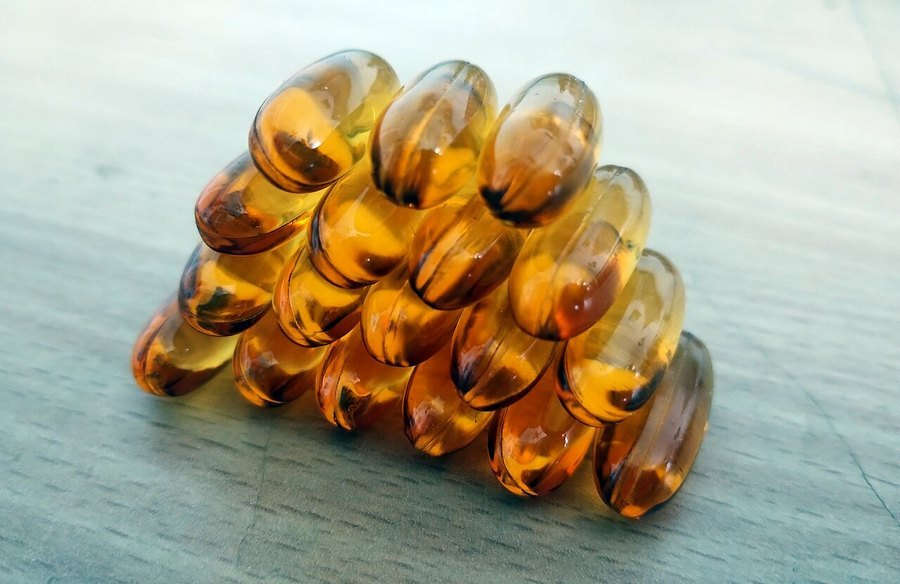
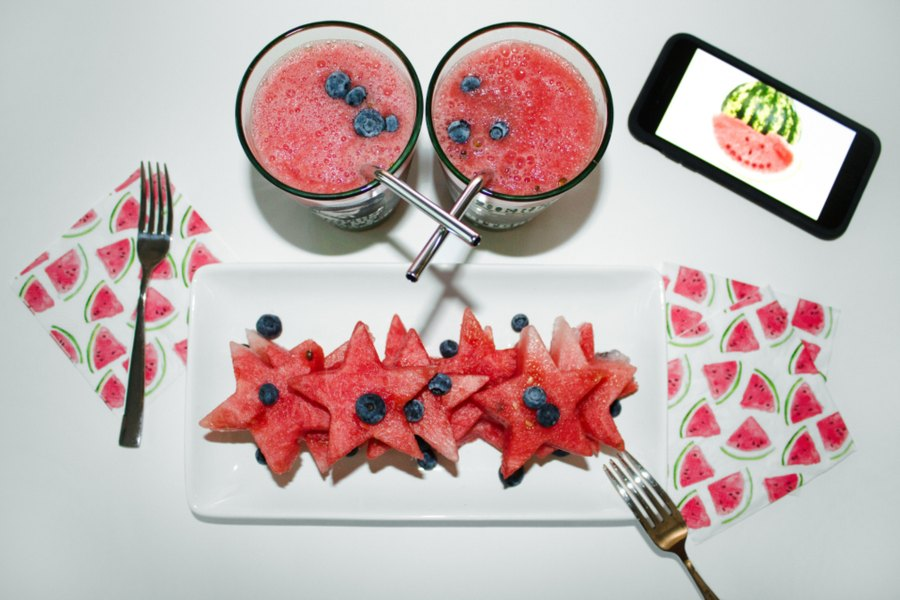

MemoHoney Ingredients: All 12, What Each One Does
Seven amounts on the label, five blanks, and one capsule to hold it all. Here's the panel line by line, with the research dose next to each entry.

Key takeaways
- Twelve ingredients, seven with a printed dose. L-arginine, arginine AKG, two forms of citrulline, beta-alanine, niacin and calcium carry milligrams. Ginkgo, bacopa, astaxanthin, blueberry and honey don't.
- One mechanism takes four lines. The arginine and citrulline entries all feed nitric oxide, about 600 mg combined.
- The best-researched ingredients are the undisclosed ones. Ginkgo and bacopa have the memory literature, and you can't check their amounts.
- The capsule sets a hard ceiling. Roughly 665 mg of disclosed material sits in a capsule that holds around 700 to 800 mg.
- Honey is a trace ingredient. The name is branding, not a description of what you swallow.
MemoHoney ingredients come down to twelve entries in one daily capsule. Seven have printed doses: L-arginine 200 mg, L-arginine AKG 200 mg, L-citrulline HCl 100 mg, L-citrulline malate 100 mg, beta-alanine 40 mg, niacin 7.5 mg and calcium 18 mg. Ginkgo, bacopa, astaxanthin, blueberry and honey appear without amounts.
That's the panel. What follows is what each line actually does, how much of it the research uses, and why the arithmetic of a single capsule matters more than the length of the list. If you want the verdict, price and refund terms in one place, our full MemoHoney review covers them. This page stays on the formula.

MemoHoney: check today's price
A blood-flow-first formula with ginkgo, bacopa, blueberry and honey. One capsule a day, stimulant-free. Sold only on the official site, with a 60-day money-back guarantee.
See the official price →What are the 12 ingredients in MemoHoney?
Here's the complete supplement facts panel as published at the time of writing, with the amount each ingredient is studied at beside it. Formulations can change, so compare against the bottle you actually receive.
| Ingredient | Per capsule | Research dose | Role |
|---|---|---|---|
| L-arginine | 200 mg | 3,000 to 6,000 mg | Nitric oxide precursor |
| L-arginine AKG (2:1) | 200 mg | Same pathway | Nitric oxide precursor, different salt |
| L-citrulline HCl | 100 mg | 6,000 to 8,000 mg | Converts to arginine |
| L-citrulline malate | 100 mg | Same pathway | Citrulline bound to malic acid |
| Beta-alanine | 40 mg | 3,200 to 6,400 mg | Muscle acid buffer |
| Niacin (B3) | 7.5 mg (47% DV) | Standard vitamin intake | Energy metabolism cofactor |
| Calcium (carbonate) | 18 mg (1.5% DV) | 1,000 to 1,200 mg daily intake | Mineral, also a flow agent |
| Ginkgo biloba | Not disclosed | 120 to 240 mg extract | Cerebral blood flow botanical |
| Bacopa monnieri | Not disclosed | 300 mg for 12 weeks | Memory botanical |
| Astaxanthin | Not disclosed | 6 to 12 mg | Carotenoid antioxidant |
| Blueberry | Not disclosed | Grams of fruit or powder | Anthocyanin source |
| Honey | Not disclosed | No cognitive dose exists | Name ingredient |
Read the table by column, not by row. The third column is the story. Every disclosed active sits well below the amount the research uses, and every ingredient that has a strong research amount is in the undisclosed group.
Why build a memory formula around blood flow?
Most memory supplements start from bacopa and add an adaptogen. MemoHoney starts somewhere else: the blood supply to the brain. The brain is about 2% of body weight and uses roughly a fifth of the body's oxygen, and it has almost no fuel reserve. It depends on steady delivery.
Cerebral blood flow tends to decline with age, and imaging studies link lower perfusion with weaker cognitive scores. That's the logic behind the formula. If vessels widen and delivery improves, the thinking goes, the tissue that handles memory gets a better supply.
It's a sound idea with real research behind it. Ginkgo has been studied for exactly this since the 1990s, and dietary nitrate from beets works on the same nitric-oxide pathway, which we cover in beetroot juice and brain health. The open question is never whether the mechanism exists. It's whether the dose in a given product is enough to move it.
That's why the rest of this page keeps returning to milligrams. A label can name the right pathway and still deliver too little to matter. Judging that means looking at each line on its own, then adding them up.
Why does the nitric-oxide engine appear four times?
L-arginine, L-arginine AKG, L-citrulline HCl and L-citrulline malate look like four ingredients. They're one. All four end up as arginine, which your blood vessel lining uses to make nitric oxide. Nitric oxide relaxes the vessel wall, the vessel widens, and more blood gets through.
The salts differ in small ways. AKG is arginine paired with alpha-ketoglutarate, a compound common in sports products. Citrulline is the more interesting form, because oral arginine is heavily broken down in the gut and liver before it reaches circulation, while citrulline survives the trip and gets converted to arginine in the kidneys. That's why blood-flow researchers often prefer citrulline.
Add the four together and you get 600 mg. The circulation studies use 3 to 8 grams. So the formula delivers somewhere between a tenth and a fifth of the research range, split across four line items. Splitting it that way makes the panel look fuller. It doesn't change the total.
Is there a fair defense? Partly. Most high-dose citrulline work measures exercise performance or blood flow after a single serving, not memory after months of daily use. A small daily intake is a different exposure. But different isn't the same as supported, and no published trial tests 600 mg of mixed arginine and citrulline against a memory outcome.
Beta-alanine: the line we can't explain
Beta-alanine raises carnosine in muscle, which buffers acid during hard exercise. It's studied at 3.2 to 6.4 grams a day for that purpose. MemoHoney has 40 mg, about one percent of that. It isn't doing the muscle job and there's no memory rationale for it at any dose. It's a label entry.
What do niacin and calcium do in a memory capsule?
Niacin is vitamin B3. At 7.5 mg it covers 47% of the daily value, which is a normal vitamin amount. B3 is a cofactor in energy metabolism, including in nerve cells, and most people already get enough from food. Its main practical feature here is the low dose. High-dose niacin causes a hot, prickly flush across the face and neck. At 7.5 mg that's unlikely.
Calcium at 18 mg is 1.5% of the daily value. Nutritionally that's nothing. Calcium carbonate is also a standard flow agent that helps powder fill capsules evenly, which is the more likely reason it's there. Don't count it toward your calcium intake.
What are the five undisclosed botanicals?
This is the half of the formula with the research, and it's the half without numbers. Ingredients on a supplement panel are listed in descending order by weight, so position gives a rough clue, but it isn't a dose.

- Ginkgo biloba. The botanical most studied for cerebral blood flow, usually at 120 to 240 mg a day of a standardized extract. Large trials in older adults have been mixed for memory outcomes. Our ginkgo biloba guide walks through what held up and what didn't.
- Bacopa monnieri. The strongest memory-specific trial record of any herb in this category. Studies use about 300 mg a day for 12 weeks, and the effect is cumulative. More in our bacopa monnieri breakdown.
- Astaxanthin. A red carotenoid from algae, the pigment that colors salmon. It's an antioxidant with a small cognitive literature at 6 to 12 mg a day.
- Blueberry. A source of anthocyanins. The positive studies use whole fruit or concentrated powder measured in grams, far beyond what a capsule remainder can hold.
- Honey. There's no established cognitive dose for honey. It's here because it's in the name.
How much can one capsule actually hold?
This is the most useful calculation on the page, and you can check it yourself.
A standard size 00 capsule holds roughly 700 to 800 mg of powder, depending on density. The seven disclosed ingredients add up to about 665 mg. Subtract one from the other and you're left with something like 35 to 135 mg for all five botanicals combined, plus any fillers.
Now set that against the research. Ginkgo alone is studied at 120 mg minimum. Bacopa at 300 mg. Even if the entire remainder went to one herb, it couldn't reach both, and it would have to leave nothing for astaxanthin, blueberry or honey. So whatever the exact split, these five are present as accents rather than at research amounts.
That isn't a hidden flaw. It's a physical trade-off of the one-capsule format. You get a schedule you'll actually keep, and you give up dose room. Knowing that up front sets fair expectations.
Is MemoHoney actually made with honey?
Honey is on the panel, low in the ordering, without an amount. Given that most of the capsule is already spoken for, the honey content is a small fraction of a gram at most. It isn't a spoonful, it isn't a jar, and it won't register in your diet.
Two practical consequences. First, the sugar is negligible, so it's not a reason to worry about calories or blood sugar from the honey itself. Second, the name tells you nothing about the mechanism. The formula is built around blood flow, and the honey is branding.
Which MemoHoney ingredients have the best evidence?
Ranked by the strength of the research behind the ingredient itself, not by how much of it is in the capsule:
- Strongest: bacopa for memory, ginkgo for blood flow (memory results mixed). Both undisclosed.
- Moderate: citrulline and arginine for blood flow at gram doses. Present at a fraction of that.
- Smaller literatures: astaxanthin and blueberry anthocyanins. Undisclosed.
- Nutritional only: niacin and calcium at vitamin-label amounts.
- No memory rationale: beta-alanine at 40 mg, honey at an undisclosed trace.
Ingredient evidence isn't product evidence. There's no published clinical trial on the finished MemoHoney formula, which is normal for this category but worth saying plainly. What you're buying is a reasonable thesis built from ingredients that have been studied elsewhere, mostly at higher doses. For the broader question of what any memory supplement can deliver, see whether memory supplements work at all.
What does the formula cost per ingredient-day?
Each bottle holds 30 capsules at one a day, so a bottle is a month and the math stays clean. Published prices at the time of writing were $79 a bottle for two (plus $9.99 shipping), $69 for three and $49 for six, both with free US shipping. Check the official page for the current number, since these change.
 2 Bottles · Starter
$79/bottle
Check Availability →
+ $9.99 shipping
6 Bottles · Best Value
$49/bottle
Claim Discount →
Free US Shipping
2 Bottles · Starter
$79/bottle
Check Availability →
+ $9.99 shipping
6 Bottles · Best Value
$49/bottle
Claim Discount →
Free US Shipping
 3 Bottles · Popular
$69/bottle
Claim Discount →
Free US Shipping
3 Bottles · Popular
$69/bottle
Claim Discount →
Free US Shipping
Prices shown are the manufacturer's published rates at the time of writing and can change without notice.
To get the daily cost, divide the order total by the number of capsules. Two bottles: $158 over 60 days is about $2.63, or $2.80 once you add shipping. Three bottles: $207 over 90 days is $2.30. Six bottles: $294 over 180 days is about $1.63.
For context, a standalone ginkgo product at a disclosed 120 mg often costs less than that. What MemoHoney adds is the amino acid side, the antioxidants and one capsule instead of several. Whether that bundle is worth the gap is your call. Our 2026 memory supplement rankings put it next to the alternatives.
What should you check on the label before buying?
Four quick checks make any memory formula easier to judge, including this one.
- Count mechanisms, not lines. Four nitric-oxide entries are one mechanism.
- Add up the disclosed milligrams and compare with the capsule size. It tells you how much room is left for anything undisclosed.
- Look for the research dose of the ingredient you care most about. If it's missing, you can't verify it.
- Check the refund terms. MemoHoney's 60-day guarantee requires an email request, return of all bottles and return shipping at your cost.
None of that makes the product bad. Seven printed amounts beats any proprietary blend, nothing on the panel is unusual or unsafe for most adults, and the blood-flow idea is legitimate. The point is to buy it knowing which parts you can check and which you're taking on trust.
MemoHoney: check today's price
A blood-flow-first formula with ginkgo, bacopa, blueberry and honey. One capsule a day, stimulant-free. Sold only on the official site, with a 60-day money-back guarantee.
See the official price →Who is this formula a fit for?
It suits someone who wants a single daily capsule, likes the circulation angle and is fine with partial disclosure. It's a weaker fit for anyone who wants to verify every milligram, or who specifically wants research-level ginkgo or bacopa, which single-ingredient products deliver more directly.
If you take blood thinners, blood pressure medication, nitrates or PDE5 inhibitors, talk to your doctor before starting. Ginkgo and the nitric-oxide group both act on systems those drugs touch. And if your memory has changed suddenly or keeps getting worse, that's a medical visit first.
Frequently asked questions
Is there caffeine in MemoHoney?
No. None of the twelve ingredients is a stimulant, and the formula is marketed as stimulant-free. You can take it alongside your usual coffee without stacking caffeine.
Is MemoHoney a proprietary blend?
Not in the usual sense. Seven of the twelve ingredients have their own printed milligram amount. The other five, ginkgo, bacopa, astaxanthin, blueberry and honey, are listed by name without amounts, so that part of the label works like a partial blend.
Why use both arginine and citrulline?
Both feed the same nitric-oxide pathway. Citrulline survives digestion better and is converted to arginine in the kidneys, so formulas often pair them. In MemoHoney the four forms total about 600 mg, which is well below the gram amounts used in blood flow research.
Does MemoHoney contain rhodiola, L-theanine or phosphatidylserine?
No. Some review sites list those ingredients, but they are not on the published supplement facts panel. The real panel has the twelve ingredients shown in the table on this page.
Is the honey in MemoHoney enough to matter for blood sugar?
No. Honey is an undisclosed trace ingredient in a capsule that is mostly filled by the amino acids. The sugar content is negligible compared with anything in a normal diet.
Are MemoHoney ingredients vegan?
Not strictly. Honey is a bee product, which many vegans avoid. The label does not state capsule material on the panel summarized here, so check the bottle or ask the seller if that matters to you.
Could the formula change?
Yes. Supplement makers can reformulate, and the amounts on this page reflect the panel as published at the time of writing. Compare against the bottle you receive.
Seen the panel? See the price.
One capsule a day, seven printed doses and a 60-day guarantee. Check the current package prices on the official page.
See MemoHoney's official price →Related: MemoHoney review: price, label and verdict · Ginkgo biloba for memory · Bacopa monnieri benefits · Best memory supplements of 2026 · Beetroot juice and brain health
Image: Gpkp / Wikimedia Commons / CC BY-SA 4.0